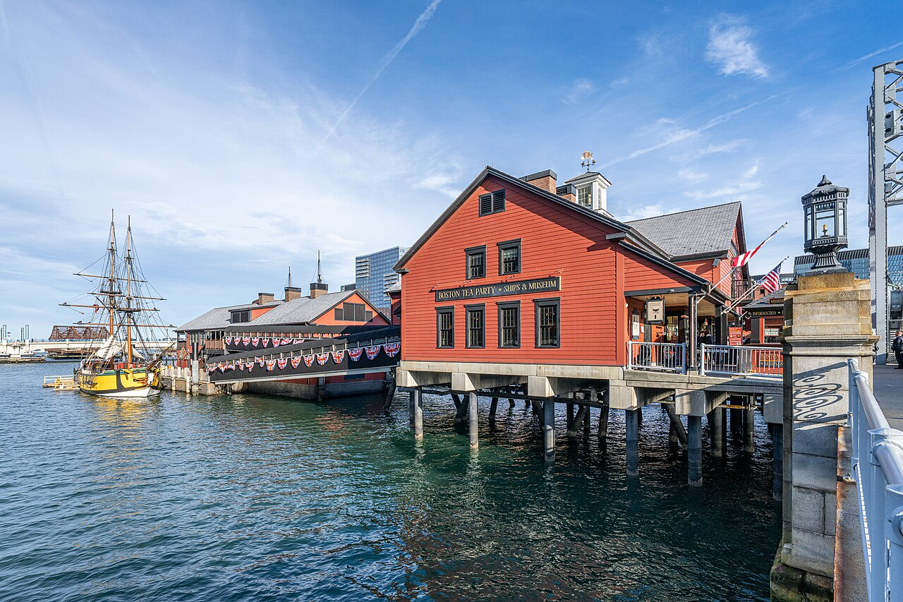
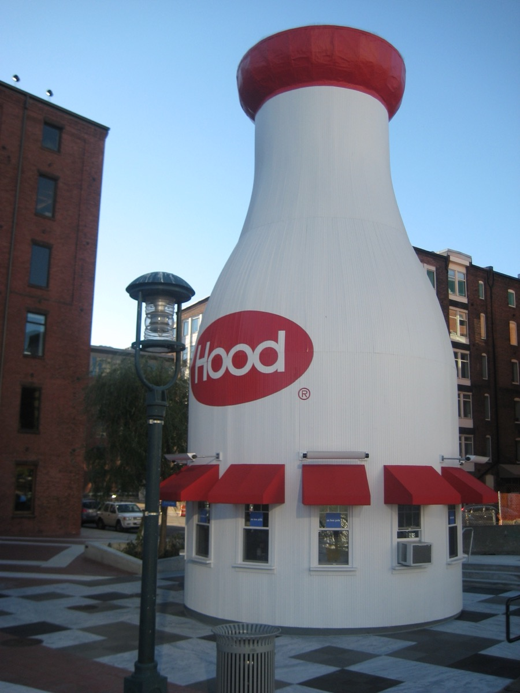
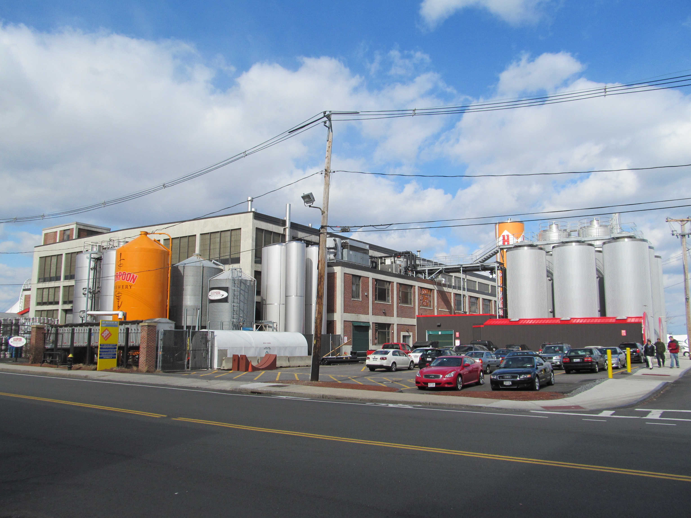

Fifteen years ago the Seaport was a thousand acres of surface parking. Today it is the densest new neighborhood in the country's oldest big city: glass towers, a two-mile Harborwalk, a contemporary art museum cantilevered over the water, two breweries people fly in for, and more rooftop bars than the rest of Boston combined.
A note on the Silver Line. It's a bus, but from South Station it runs in its own tunnel under the Seaport, so Courthouse and World Trade Center feel like subway stops. Inbound from the airport the SL1 is free.
The short answer
The 10 best things to do in the Seaport
01 · Sights
The best things to do in the Seaport
Art in the afternoon, the water at sunset, a beer somewhere in between.
The Institute of Contemporary Art

A glass-and-steel building on the water since 2006. The top floor cantilevers 80 feet over the harbor; the grandstand steps outside are free.
The Harborwalk and Fan Pier Park

The most continuous, best-kept stretch of the 43-mile Harborwalk. The whole Downtown skyline lines up across the water. Best twenty minutes after sunset.
Boston Tea Party Ships and Museum

A costumed, hour-long tour: a reenacted town meeting, boarding a replica ship, throwing tea into the channel, then the two surviving tea chests.
Boston Children's Museum

A converted wool warehouse with a three-story climbing structure, a real Kyoto house, a bubble room. The 40-foot Milk Bottle out front sells ice cream.
The Lawn on D
A 2.7-acre event lawn with a ring of oval swings that glow and change color after dark. Lawn games, food trucks, free concerts in summer.
A concert at the Leader Bank Pavilion
A 5,000-seat covered amphitheater open on the water side, so the skyline sits behind the stage. Late May through September.
02 · Food
Where to eat in the Seaport
More restaurants per block than anywhere in Boston, and a lot of them are chains. These belong here.
Row 34
The Seaport restaurant locals recommend without hedging. Own-farm oysters, a raw bar the length of the wall, twenty draft beers.
Yankee Lobster
A family fish market and takeout counter predating the towers. Order at the counter, eat at a picnic table. Closest thing to a Cape Cod shack in the city.
Legal Harborside
Three floors on the water: casual fish house, formal dining, roof deck bar with a retractable roof.
Flour Bakery
Joanne Chang's original Fort Point location. Sticky buns, the roast lamb sandwich, a counter by the window for a fine hour with a book.
Woods Hill Pier 4
On the site of the old Anthony's Pier 4. Farm-to-table menu, floor-to-ceiling harbor windows. Book a window table for sunset.
Lolita, Pastoral and Lucky's
A dark theatrical Mexican restaurant, wood-fired pizza with a good happy hour, and an unmarked basement bar with a Sinatra tribute on Sundays.
03 · Breweries & rooftops
Where to drink in the Seaport
Two of New England's best-known breweries fifteen minutes apart, and more rooftops than anywhere else in Boston.
Trillium Fort Point
Started in a Fort Point garage in 2013, now one of the most sought-after breweries in the country. Rooftop deck, Congress Street IPA named for the block.
Harpoon Brewery

Brewing on Northern Avenue since 1987, before the Seaport existed. A pretzel program worth the visit on its own, plus tours ending in a tasting.
Lookout Rooftop at the Envoy Hotel
The rooftop that started the Seaport rooftop trend. Six floors up with the whole Downtown skyline across the water. Winter igloos need reservations weeks ahead.
04 · Fort Point
Fort Point and the art district
Between the channel and the towers is the older, better-looking Seaport: a grid of brick warehouses that has housed one of the largest artist communities in New England since the 1970s. The Fort Point Arts Community still runs a gallery and about 300 artists still work here.
Fort Point Open Studios, twice a year (May and October), opens dozens of studios otherwise locked. The FPAC Gallery at 300 Summer Street is free year-round. The Boston Fire Museum at 344 Congress Street is a free, volunteer-run collection open Saturdays.
05 · History
From tidal flats to towers
In 1800 the Seaport was a tidal mudflat that flooded twice a day. The Commonwealth filled it in between the 1830s and 1880s for rail yards and piers. By the 1950s shipping left, and the district turned into parking lots.
The Big Dig, the Moakley Courthouse (1998), the convention center (2004) and the ICA (2006) changed that. In 2010 the city rezoned for height, and roughly $20 billion of development followed in a decade.
06 · Side streets
Side streets and quieter corners
The Fish Pier and Northern Avenue: the Fish Pier still lands catch; walk out early to watch the boats unload.
Harbor Way: a pedestrian street to the water past Seaport Common, where Snowport sets up in winter.
A Street and Melcher Street: where the Fort Point warehouse grid is most intact, near the Gillette factory since 1905.
07 · Events
Seaport Common and events
Seaport Common runs a nearly constant calendar: outdoor movies, live music, a produce market in summer. Snowport, mid-November through December, is a holiday market of about 100 vendor huts with a Christmas tree market and a curling rink.
08 · Tips
Tips for a first visit
Time it for sunset. Arrive late afternoon, do the ICA or a brewery, be at Fan Pier when the light goes.
Walk from South Station. Often as fast as the Silver Line transfer, and takes you through Fort Point.
Book the rooftops. Lookout and the Legal roof deck fill up; reservations are close to essential in summer.
Pair it with the North End. The Harborwalk continues across the channel; Hanover Street is 25 minutes on foot.
FAQ
Seaport Boston: common questions
What is the Seaport in Boston known for?
Boston's newest neighborhood, built almost entirely since 2010. Known for the ICA, the Harborwalk and Fan Pier views, rooftop bars, Trillium and Harpoon breweries, the Tea Party Ships, the Children's Museum and Fort Point's warehouses.
How do you get to the Seaport?
Red Line to South Station and walk 10–15 minutes, or transfer to the Silver Line (SL1/SL2/SL3) to Courthouse or World Trade Center. From Logan, the SL1 bus runs directly.
Is the Seaport worth visiting?
Yes, for the harbor views, the ICA, the breweries and restaurants. It's not historic, so pair it with Fort Point's warehouses or the North End across the water.
How long should you spend in the Seaport?
Half a day covers the ICA, a Harborwalk loop and a brewery. A full day adds the Tea Party Ships or Children's Museum, dinner and a rooftop.
Is the Seaport expensive?
One of the pricier Boston neighborhoods for food and drink. The Harborwalk, Fan Pier, Seaport Common, the Lawn on D and Fort Point are free; the ICA is free Thursday evenings.
What is there to do in the Seaport in winter?
Snowport (Nov–Dec) and the Lookout Rooftop's heated igloos. The ICA, Children's Museum, Tea Party Ships and both breweries are indoors.